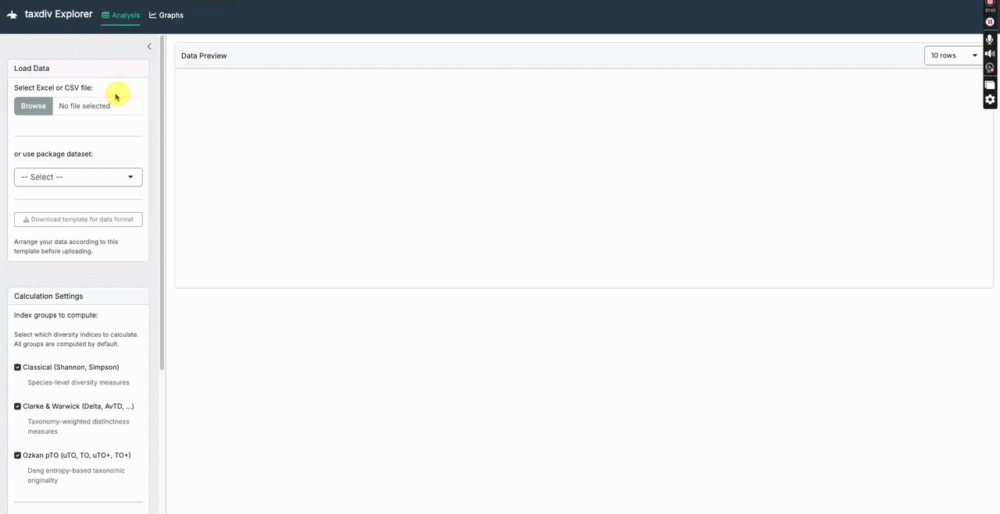
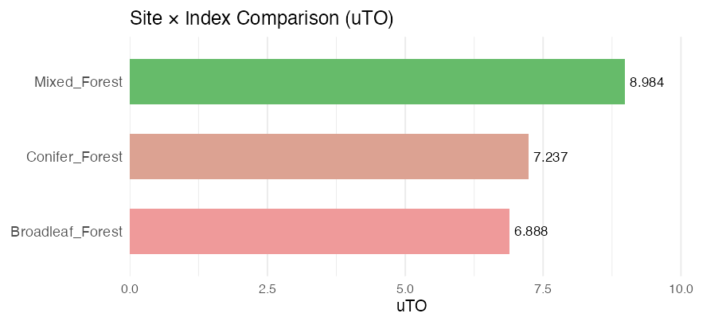
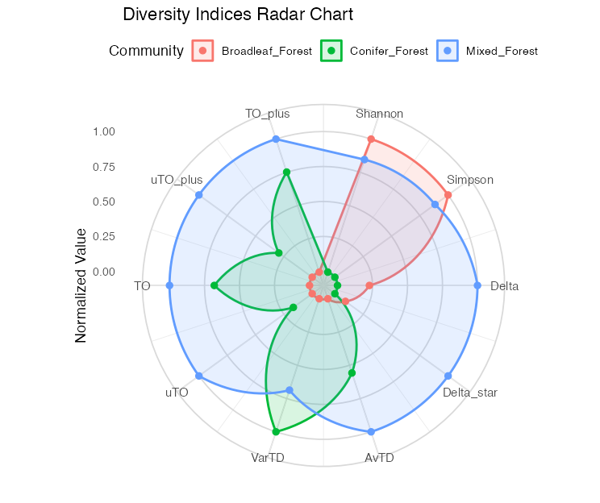
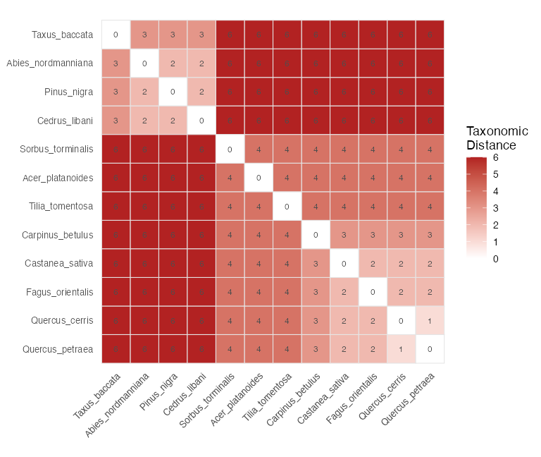
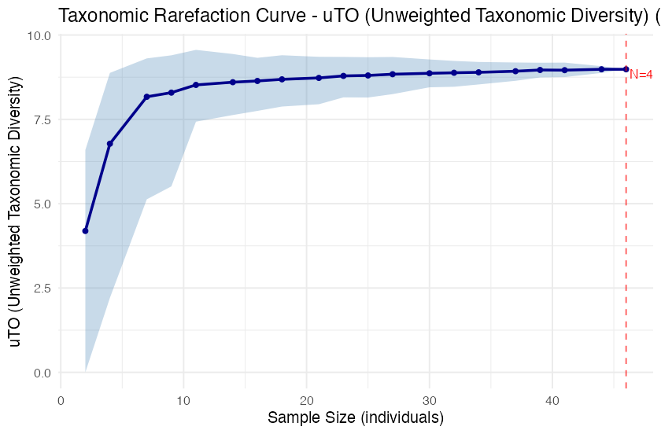
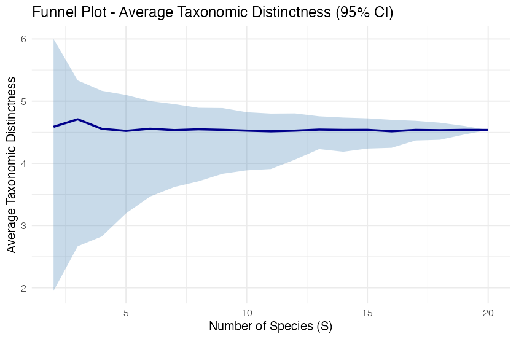
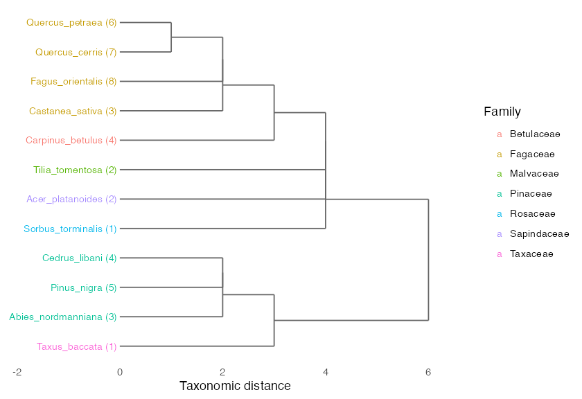
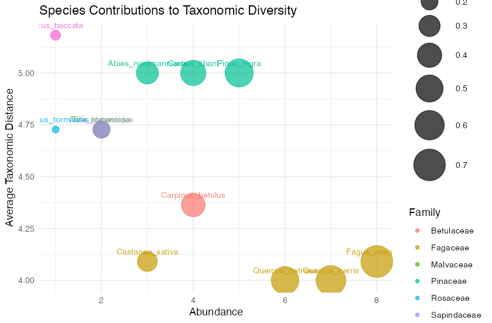
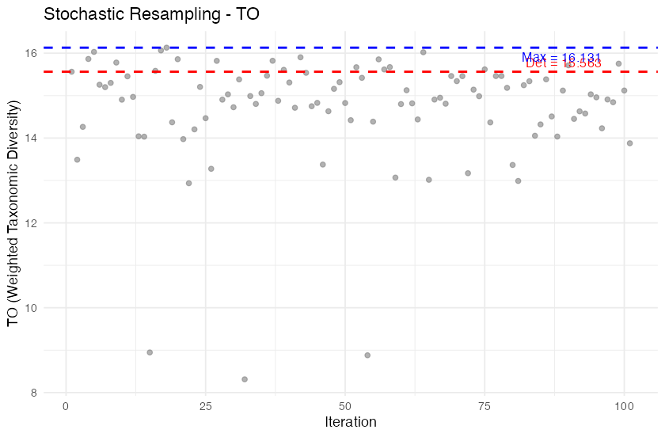

taxdiv
Taxonomic diversity indices for ecological community data — in one place.
Classical measures, Clarke & Warwick distinctness, and the Deng entropy-based Ozkan (2018) method, with an interactive dashboard and publication-ready graphics.


Traditional indices such as Shannon and Simpson treat every species as equally distinct. But 10 species from 10 different families are taxonomically more diverse than 10 species from a single genus. taxdiv captures this by folding the taxonomic hierarchy into the calculation — through two complementary frameworks (Clarke & Warwick distinctness and Ozkan pTO based on Deng entropy) — and ships everything from raw Excel data to finished figures.
🖥️ Interactive Dashboard
No code required. taxdiv_explorer() launches a point-and-click Shiny app: load an Excel/CSV file, pick which index families to compute, run the analysis with a live progress bar, explore five graph types, and download results and figures.

⚡ Installation
# From CRAN
install.packages("taxdiv")
# Development version from GitHub
# install.packages("devtools")
devtools::install_github("mgorgoz/taxonomic-diversity-r")🚀 Quick Start
library(taxdiv)
# Species abundances
community <- c(
Quercus_robur = 15,
Pinus_nigra = 8,
Fagus_orientalis = 12,
Abies_nordmanniana = 5,
Juniperus_excelsa = 3
)
# Taxonomic hierarchy
tax_tree <- build_tax_tree(
species = names(community),
Genus = c("Quercus", "Pinus", "Fagus", "Abies", "Juniperus"),
Family = c("Fagaceae", "Pinaceae", "Fagaceae", "Pinaceae", "Cupressaceae"),
Order = c("Fagales", "Pinales", "Fagales", "Pinales", "Pinales")
)
compare_indices(community, tax_tree) # all 14 indices at once
ozkan_pto(community, tax_tree) # the 8 Ozkan pTO valuesFrom Excel — one command, all sites, automatic column detection:
data <- as.data.frame(readxl::read_excel("my_data.xlsx"))
batch_analysis(data)
#> Site N_Species Shannon Simpson Delta Delta_star AvTD VarTD uTO TO ...
#> A1 6 1.494 0.757 1.622 2.138 2.333 0.667 2.14 3.49 ...
#> A2 5 1.577 0.784 1.719 2.243 2.500 0.500 1.98 3.21 ...A ready-to-use Excel template ships with the package: taxdiv_data_template.xlsx.
📊 Gallery
All seven plot functions plus the dashboard’s bar chart — examples on the bundled anatolian_trees data:

Bar chart — compare any index across sites at a glance
|
 |
 |
| Radar — compare every index across sites | Heatmap — pairwise taxonomic distance |
|
 |
 |
| Rarefaction — bootstrap curves for 8 indices | Funnel — 95% significance envelope (AvTD/VarTD) |
|
 |
 |
| Dendrogram — taxonomic hierarchy | Bubble — species contributions |
|
 |
|
| Iteration — stochastic resampling trajectory (Run 2) | |
✨ Why taxdiv?
| Feature | vegan | ape | taxdiv |
|---|---|---|---|
| Shannon / Simpson | yes | — | yes |
| Clarke & Warwick suite (Delta, Delta*, AvTD, VarTD) | — | partial | yes |
| Ozkan pTO — 8 indices (Run 1+2+3) | — | — | yes |
| Simulation-based significance (funnel plots) | — | — | yes |
| Taxonomic rarefaction with bootstrap CI | — | — | yes |
| Stochastic resampling + sensitivity analysis | — | — | yes |
| Bias-corrected Shannon (Miller-Madow, Grassberger, Chao-Shen) | — | — | yes |
| Excel → results in one command | — | — | yes |
| Interactive Shiny dashboard | — | — | yes |
🧰 Features
26 exported functions across the full workflow:
| Category | Functions |
|---|---|
| Classical |
shannon() (3 bias corrections), simpson()
|
| Clarke & Warwick |
delta(), delta_star(), avtd(), vartd()
|
| Ozkan pTO |
ozkan_pto(), pto_components(), deng_entropy_level()
|
| Ozkan pipeline |
ozkan_pto_full(), ozkan_pto_resample(), ozkan_pto_sensitivity(), ozkan_pto_jackknife()
|
| Batch / compare |
batch_analysis(), compare_indices()
|
| Simulation / rarefaction |
simulate_td(), rarefaction_taxonomic()
|
| Structure |
build_tax_tree(), tax_distance_matrix()
|
| Visualization |
plot_funnel(), plot_rarefaction(), plot_iteration(), plot_radar(), plot_heatmap(), plot_bubble(), plot_taxonomic_tree()
|
| Dashboard | taxdiv_explorer() |
Every main result object has tidy print() and summary() methods (13 S3 methods total), and the three example datasets (anatolian_trees, gazi_comm, gazi_gytk) let you try everything immediately.
🔁 Excel macro equivalence
taxdiv reproduces the 8 Ozkan pTO values from the original Excel macro, with full reproducibility via a seed argument:
| Excel macro | taxdiv |
|---|---|
| Run 1 — uT0+, T0+ |
uTO_plus, TO_plus
|
| Run 2 — uT0, T0 |
uTO, TO
|
| Run 3 — uT0+max, T0+max, uT0max, T0max |
uTO_plus_max, TO_plus_max, uTO_max, TO_max
|
The _max variants use only informative taxonomic levels (where Deng entropy > 0), matching the macro’s Run 3 behaviour.
📚 Learn more
Full documentation, tutorials, and the method theory live on the package website:
- Get Started — a guided tour
- Complete Workflow
- Ozkan pTO Method — Deng entropy, the slicing procedure, and the 8 indices
- Clarke & Warwick Distinctness
- Visualization Guide
- Türkçe Rehber
📦 Package status
| Metric | Value |
|---|---|
| R CMD check | 0 errors, 0 warnings, 0 notes |
| Unit tests | 668 passing |
| Exported functions | 26 |
| S3 methods | 13 |
| Example datasets | 3 |
| Vignettes | 7 (6 English + 1 Turkish) |
📖 Citation
citation("taxdiv")Gorgoz MM, Ozkan K, Negiz MG (2026). taxdiv: Taxonomic Diversity Indices Using Deng Entropy. R package version 1.0.0. https://github.com/mgorgoz/taxonomic-diversity-r
Ozkan K (2018). “A new proposed measure for estimating taxonomic diversity.” Turkish Journal of Forestry, 19(4), 336–346. doi:10.18182/tjf.441061.
Full reference list
Primary methods
- Ozkan, K. (2018). A new proposed measure for estimating taxonomic diversity. Turkish Journal of Forestry, 19(4), 336–346. doi: 10.18182/tjf.441061
- Ozkan, K. & Mert, A. (2022). Comparisons of Deng entropy-based taxonomic diversity measures with the other diversity measures and introduction to the new proposed (reinforced) estimators. FORESTIST, 72(2). doi: 10.5152/forestist.2021.21025
- Deng, Y. (2016). Deng entropy. Chaos, Solitons & Fractals, 91, 549–553. doi: 10.1016/j.chaos.2016.08.011
Taxonomic distinctness
- Warwick, R.M. & Clarke, K.R. (1995). New ‘biodiversity’ measures reveal a decrease in taxonomic distinctness with increasing stress. Marine Ecology Progress Series, 129, 301–305. doi: 10.3354/meps129301
- Clarke, K.R. & Warwick, R.M. (1998). A taxonomic distinctness index and its statistical properties. Journal of Applied Ecology, 35(4), 523–531. doi: 10.1046/j.1365-2664.1998.3540523.x
- Clarke, K.R. & Warwick, R.M. (1999). The taxonomic distinctness measure of biodiversity: weighting of step lengths between hierarchical levels. Marine Ecology Progress Series, 184, 21–29. doi: 10.3354/meps184021
- Clarke, K.R. & Warwick, R.M. (2001). A further biodiversity index applicable to species lists: variation in taxonomic distinctness. Marine Ecology Progress Series, 216, 265–278. doi: 10.3354/meps216265
Classical diversity
- Shannon, C.E. (1948). A mathematical theory of communication. Bell System Technical Journal, 27(3), 379–423. doi: 10.1002/j.1538-7305.1948.tb01338.x
- Simpson, E.H. (1949). Measurement of diversity. Nature, 163, 688. doi: 10.1038/163688a0
Evidence theory & bias correction
- Dempster, A.P. (1967). Upper and lower probabilities induced by a multivalued mapping. The Annals of Mathematical Statistics, 38(2), 325–339. doi: 10.1214/aoms/1177698950
- Shafer, G. (1976). A Mathematical Theory of Evidence. Princeton University Press.
- Chao, A. & Shen, T.-J. (2003). Nonparametric estimation of Shannon’s index of diversity when there are unseen species in sample. Environmental and Ecological Statistics, 10, 429–443. doi: 10.1023/A:1026096204727